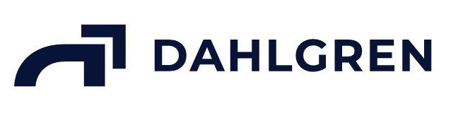

La operación depende de personas
- Recibir una solicitud
- Buscar archivos y abrir sistemas
- Cargar, comparar y controlar
- Generar, responder y archivar

Continuar a plataforma →Centralizar información, automatizar procesos y utilizar inteligencia artificial para que el crecimiento del estudio deje de depender directamente del crecimiento de su estructura de personal.
La plataforma no es el fin: es el medio para recuperar tiempo, centralizar conocimiento y enfocarlo donde más valor aporta.
Primero conectar. Después centralizar. Luego automatizar. Reemplazar solo cuando genere valor.
Cada avance construye la base para el siguiente; no se trata solo de sumar módulos.
La velocidad sostenible depende tanto de la tecnología como de las decisiones, accesos y validaciones disponibles.
Evitar desarrollar demasiadas áreas simultáneamente y acordar criterios claros antes de incorporar documentos.
Dimensionar SARF/FoxPro y Account; ordenar permisos y datos antes de construir IA; confirmar qué información de ARCA es técnicamente viable.
Contar a tiempo con definiciones, accesos, referentes y validaciones del Estudio para convertir cada entrega en una base confiable.
Detecta, comprende, prepara y ejecuta si está autorizada. El profesional revisa los casos que realmente necesitan criterio.
Explorá la maqueta funcional actual como siguiente paso de la presentación.